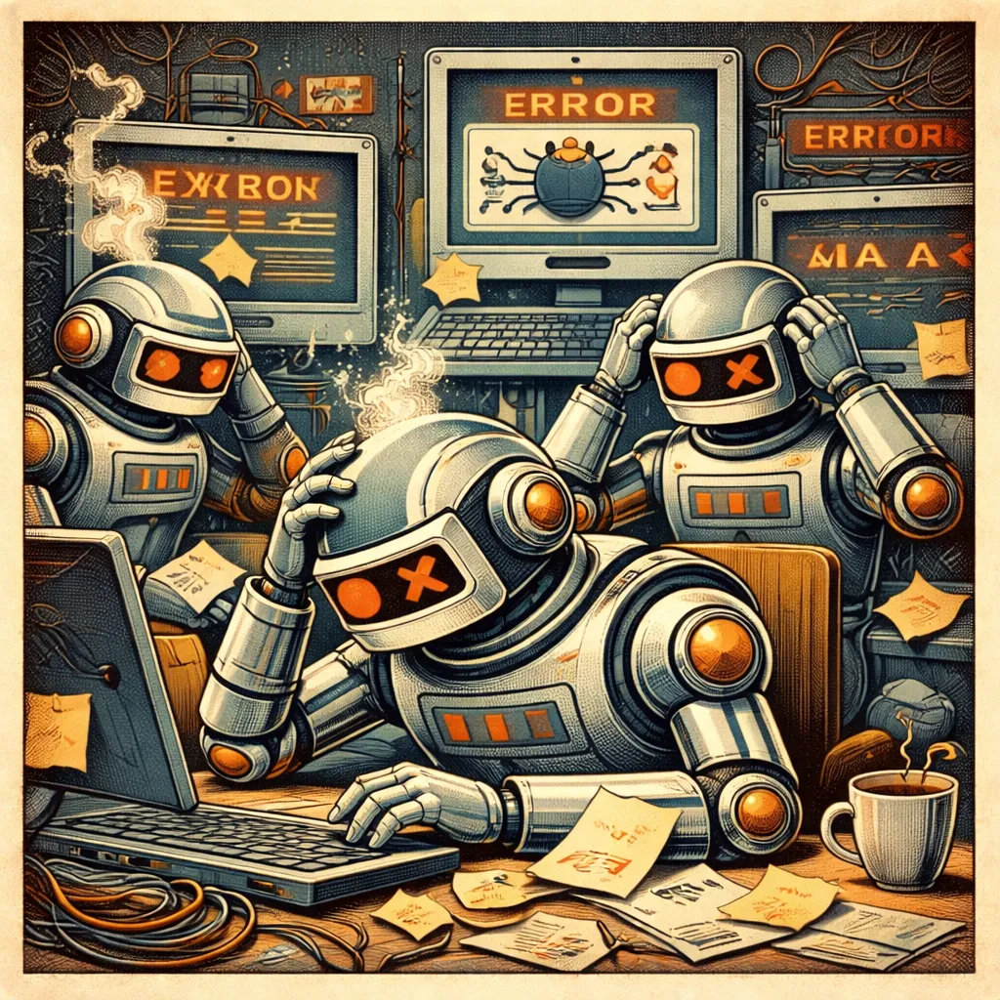
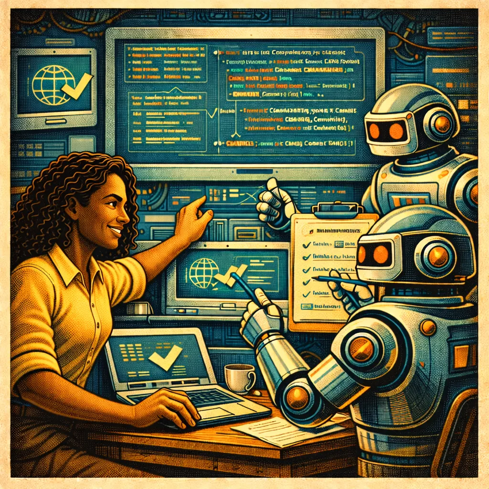

Designing AI Systems that can improve autonomously
Ryan Sweet · May 2026
Coding Agents are Terrible!
By default – they have lots of failure modes – they are just regurgitating the internet.
They are trained on LOTS of terrible code AND on some very excellent code. Your chances of getting the terrible code are relative to its proportionality in the training set.
Guess how common terrible code is on the internet?

Coding Agents are Amazing!
They can take the best code on the internet and make it available instantly AND they can reason over it, with your help.
Your job as an engineer is to help them converge on the good code.

Part 1 – Coding Agents Quality
But it produces garbage! How do I get to Quality?
Setting High Standards
Encoding Best Practices
Recursion, Reflection, and Repetition
Outside-in-testing
Laying a Foundation
Write down your development philosophy – e.g.:
Ruthless Simplicity
Small, modular bricks that fit together
Zero BS: No stubs, no placeholders, no faked data, no faked APIs, no TODOs
Must do MULTIPLE passes from MULTIPLE subagents – layers and layers – until you converge on zero quality discoveries.
Build Context Specific to your Repo and Tech
The opposite of context poisoning – use Agents.md files or copilot-instructions.md files at strategic locations in the codebase to help build the correct context.
Build Skills that are specific to things you are working with and keep them in your repo or in a plugin you use.
This is especially important for internal tools/idioms/tech that is outside the training set (e.g.: GQL).
A multiagent system with five complementary modes:
🔴 Weakness Deployment — "Make it vulnerable" — generate and deploy intentionally vulnerable Azure infrastructure to test your security stack
🔵 Weakness Investigation — "Find what's already wrong" — run 29 agents and a 230+ CWE static scanner to discover cloud weaknesses, map attack paths, compute risk scores, and generate remediation plans
🟡 Runtime Detection — "Catch it while it happens" — pull Activity Logs and Entra ID Sign-in Logs via Azure Monitor REST API, run 22 detection rules for active threats: impossible travel, credential stuffing, RBAC escalation, Key Vault enumeration, storage exfiltration
🟠 Continuous Validation — "Watch it over time" — schedule-driven re-investigation on a fixed interval, each run snapshotted and diffed against previous to produce a delta report
🟢 Shift-Left — "Catch it before it ships" — scanner at PR time against terraform plan JSON and at deploy time as a webhook publishing findings to Microsoft Defender for Cloud
All five modes share a single CWE knowledge graph. Each aspect improves by leveraging the others:
Start with known ground-truth
Bootstrap complementary generation and assessment
Define a targeted scope of expansion
Use generated data to test assessment
Use assessment to validate generation
Continually cross-check against real-world sources
Reflective Systems: Simard
Goal-seeking agent with self-knowledge and a PM architect role.
The system maintains a model of its own capabilities and uses reflection to improve.
Create a goal, a set of gates, and governance system for the loop, then "set it and forget it":
"Your goal is to improve the performance of the analysis stage by x% when working on very large files. Your starting point is ____. For each loop propose small concrete improvements and then evaluate them using multiple sub-agents, multiple models, and multiple layers. Use the /crusty-old-engineer skill as my proxy to continuously review your work. Use the quality-audit skill to iterate on each changeset before evaluating. Use the code-atlas skill to continuously update your understanding of the code. Ask Crusty to analyze your work at each stage and adapt to their feedback…."